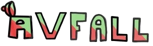

Informasjon hentet i sammarbeid med David og Jakub
Dette er en del av en tverrfaglig oppgave som handler om bærekraft og avfall. Vi har jobbet med dette i alle timene til følgende fag i to uker: Naturfag, Matematikk, Engelsk, Konseptutvikling og programmering, Produksjon og historieforteling, og Teknologiforståelse. Vi har valgt et tema relatert til kosthold eller avfall, og her valgte vi å ha om avfall hjemme. Vi skulle også komme med en problemstilling relatert til dette temaet og derfor kom vi fram til: - "Vet du hva som skjer med avfallet ditt?". Vi har i tillegg laget en spørreundersøkelse der vi håper å få den nødvendige dataen til prosjektet fra. Denne finner du linket under "Spørreundersøkelse" i topnav-en.
0/4